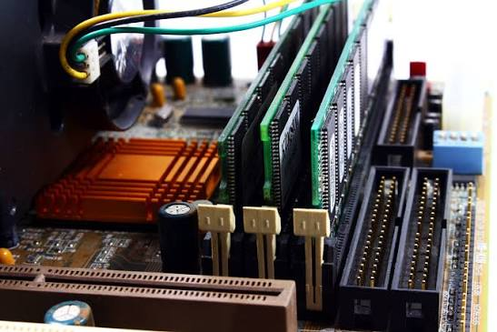

Programação / Front-End e Back-End
HTML, CSS, JavaScript, Java, Python.
Ver conteúdo →Portfólio de aprendizagem
Conhecimentos práticos e tecnológicos desenvolvidos ao longo do curso.
HTML, CSS, JavaScript, Java, Python.
Ver conteúdo →Protocolos, Topologia, Servidores.
Ver conteúdo →
Modelagem, tabelas, consultas e organização de dados.
Ver conteúdo →